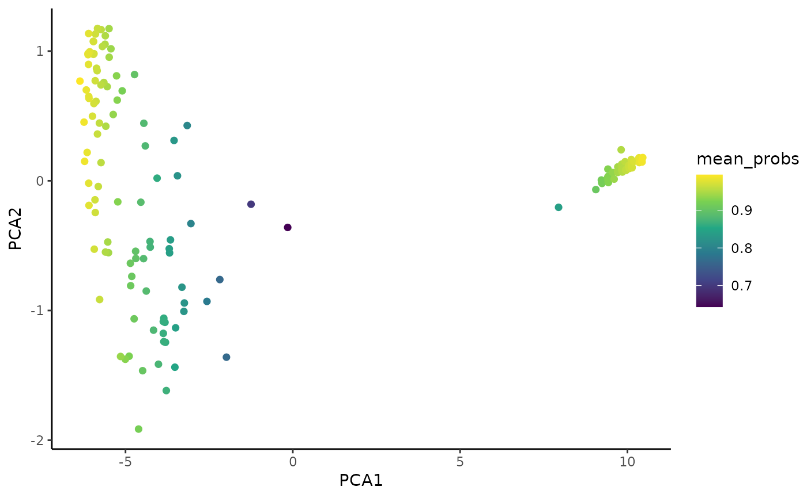

Summarise ICP cell cluster probability table(s)
Usage
SummariseCellClusterProbability.SingleCellExperiment(
object,
icp.run,
icp.round,
funs,
scale.funs,
save.in.sce
)
# S4 method for class 'SingleCellExperiment'
SummariseCellClusterProbability(
object,
icp.run = NULL,
icp.round = NULL,
funs = c("mean", "median"),
scale.funs = TRUE,
save.in.sce = TRUE
)Arguments
- object
An object of
SingleCellExperimentclass with ICP cell cluster probability tables saved inmetadata(object)$coralysis$joint.probability. After runningRunParallelDivisiveICP.- icp.run
ICP run(s) to retrieve from
metadata(object)$coralysis$joint.probability. By defaultNULL, i.e., all are retrieved. Specify a numeric vector to retrieve a specific set of tables.- icp.round
ICP round(s) to retrieve from
metadata(object)$coralysis$joint.probability. By defaultNULL, i.e., all are retrieved.- funs
Functions to summarise ICP cell cluster probability:
"mean"and/or"median". By defaultc("mean", "median"), i.e, both mean and median are calculated. Set toNULLto not estimate any.- scale.funs
Scale in the range 0-1 the summarised probability obtained with
funs. By defaultTRUE, i.e., summarised probability will be scaled in the 0-1 range.- save.in.sce
Save the data frame into the cell metadata from the
SingleCellExperimentobject or return the data frame. By defaultTRUE, i.e., the summary of probabilities retrieved is save in the SCE object incolData(object).
Examples
# Import package
suppressPackageStartupMessages(library("SingleCellExperiment"))
# Create toy SCE data
batches <- c("b1", "b2")
set.seed(239)
batch <- sample(x = batches, size = nrow(iris), replace = TRUE)
sce <- SingleCellExperiment(assays = list(logcounts = t(iris[,1:4])),
colData = DataFrame("Species" = iris$Species,
"Batch" = batch))
colnames(sce) <- paste0("samp", 1:ncol(sce))
# Prepare SCE object for analysis
sce <- PrepareData(sce)
#> Converting object of `matrix` class into `dgCMatrix`. Please note that Coralysis has been designed to work with sparse data, i.e. data with a high proportion of zero values! Dense data will likely increase run time and memory usage drastically!
#> 4/4 features remain after filtering features with only zero values.
# Multi-level integration (just for highlighting purposes; use default parameters)
set.seed(123)
sce <- RunParallelDivisiveICP(object = sce, batch.label = "Batch",
k = 2, L = 25, C = 1, train.k.nn = 10,
train.k.nn.prop = NULL, use.cluster.seed = FALSE,
build.train.set = FALSE, ari.cutoff = 0.1,
threads = 2)
#>
#> Initializing divisive ICP clustering...
#>
|
| | 0%
|
|=== | 4%
|
|====== | 8%
|
|========= | 12%
|
|============ | 17%
|
|=============== | 21%
|
|================== | 25%
|
|==================== | 29%
|
|======================= | 33%
|
|========================== | 38%
|
|============================= | 42%
|
|================================ | 46%
|
|=================================== | 50%
|
|====================================== | 54%
|
|========================================= | 58%
|
|============================================ | 62%
|
|=============================================== | 67%
|
|================================================== | 71%
|
|==================================================== | 75%
|
|======================================================= | 79%
|
|========================================================== | 83%
|
|============================================================= | 88%
|
|================================================================ | 92%
|
|=================================================================== | 96%
|
|======================================================================| 100%
#>
#> Divisive ICP clustering completed successfully.
#>
#> Predicting cell cluster probabilities using ICP models...
#> Prediction of cell cluster probabilities completed successfully.
#>
#> Multi-level integration completed successfully.
# Integrated PCA
set.seed(125) # to ensure reproducibility for the default 'irlba' method
sce <- RunPCA(object = sce, assay.name = "joint.probability", p = 10)
#> Divisive ICP: selecting ICP tables multiple of 1
# Summarise cluster probability
sce <- SummariseCellClusterProbability(object = sce, icp.round = 1,
save.in.sce = TRUE) # saved in 'colData'
# Plot the clustering result for ICP run no. 3
PlotDimRed(object = sce, color.by = "icp_run_round_3_1_clusters")
# Plot Coralysis mean cell cluster probabilities
PlotExpression(object = sce, color.by = "mean_probs",
color.scale = "viridis")
